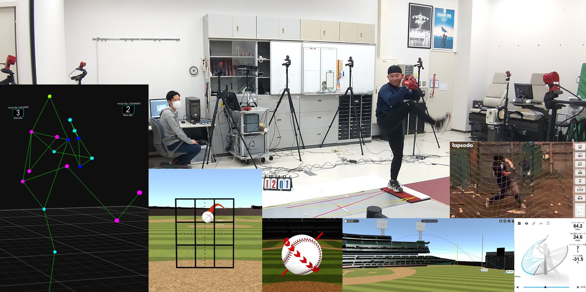

研究者一覧 ／ 小林 育斗
SEEDS / 03
健康・スポーツ科学データ・テクノロジー
バイオメカニクス手法を用いた
運動発達と身体運動の研究

ASSOCIATE PROFESSOR ｜ 准教授
小林 育斗
博士（体育科学）
岩見沢校
スポーツ文化専攻
スポーツ文化専攻
バイオメカニクス手法を用いて、子どもの運動発達から成人の競技パフォーマンス、日常生活動作（ADL）までを対象とした身体運動の研究を行っています。近年、子どもの運動能力低下や動作の多様化、スポーツ障害予防、高齢化に伴う身体機能維持などが課題となっており、身体運動を客観的・定量的に評価する技術の重要性が高まっています。
このような課題に対し、モーションキャプチャ、高速度カメラ、床反力計、画像解析、AIを活用した姿勢推定技術などを用いて、身体運動を三次元的かつ定量的に分析しています。特に、スポーツ動作や基礎的動作における「動きの特徴」や「力学的メカニズム」を可視化し、発達段階や技能差の評価につなげています。
これらの成果は、体育・スポーツ指導、競技力向上、障害予防、子どもの運動支援、高齢者の身体機能評価などへの活用が期待されます。また、教育機関、スポーツ現場、自治体、医療・健康分野との連携を通じ、科学的根拠に基づく身体運動の指導・支援への展開を進めています。

体育・スポーツ現場における動作指導および競技力向上
子どもの基礎的動作の分析と運動発達の評価
AI・画像解析技術を活用した身体運動評価システムの開発
日常生活動作（ADL）の分析による身体機能評価と障害予防
芸術活動における身体動作の分析と技能評価
100名以上の小学生を対象とした動作分析実績を有し、モーションキャプチャやAIを活用した画像解析技術により、身体運動を三次元的かつ定量的に評価できる点が特徴です。子どもの運動発達評価、競技力向上、ADL評価などへの応用が可能であり、教育機関、自治体、スポーツ・健康関連企業との連携が期待されます。
動作分析・評価システム開発・指導支援のご相談を承っています。